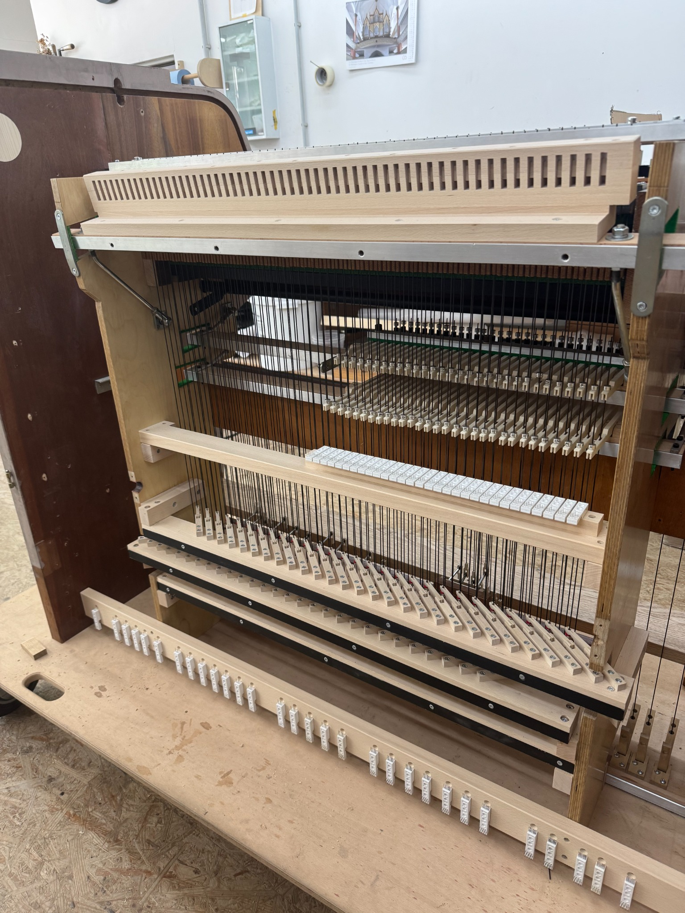
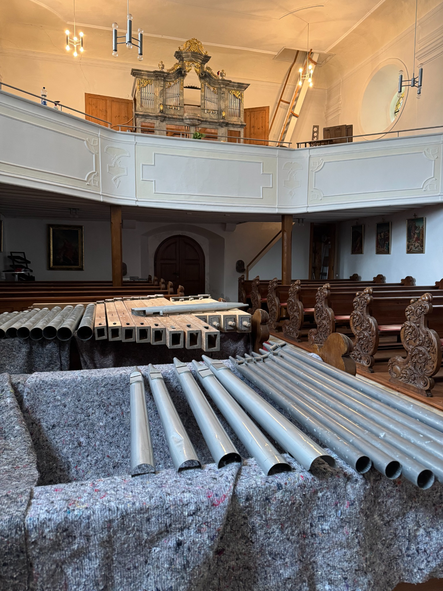
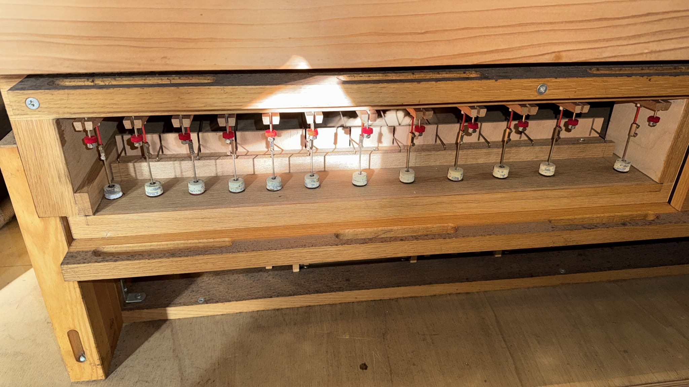
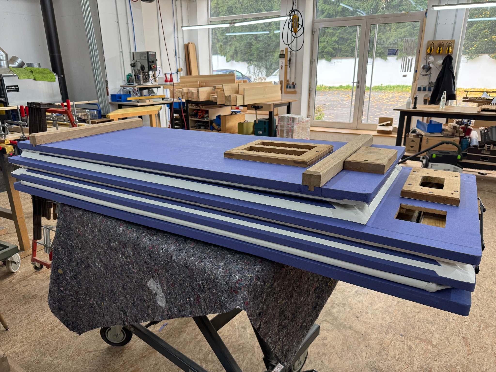
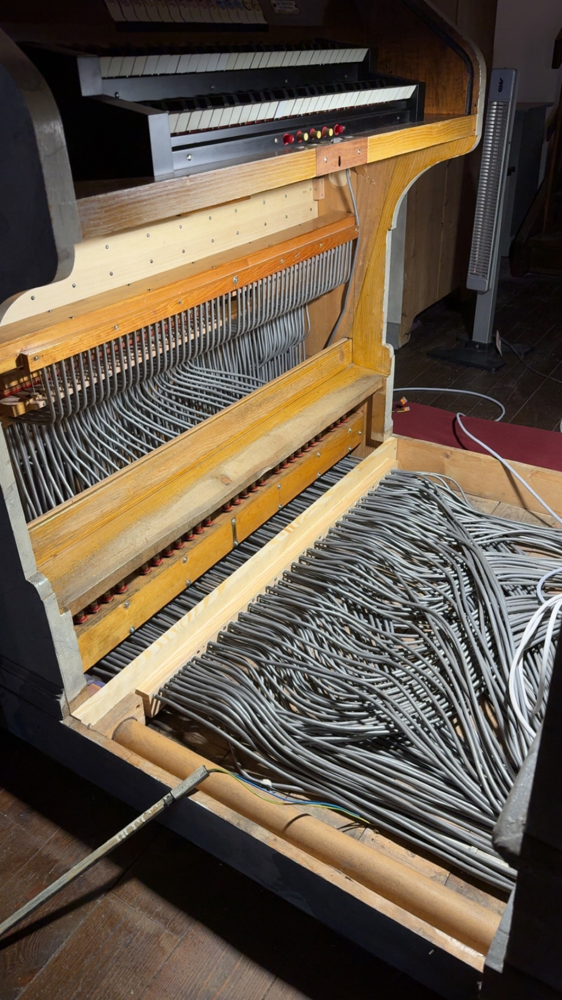
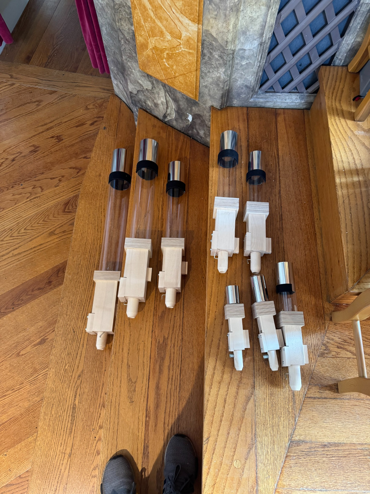
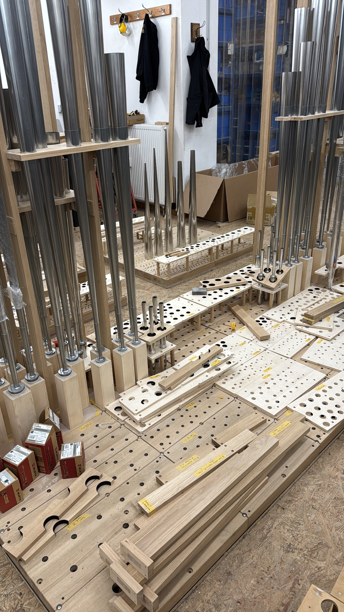
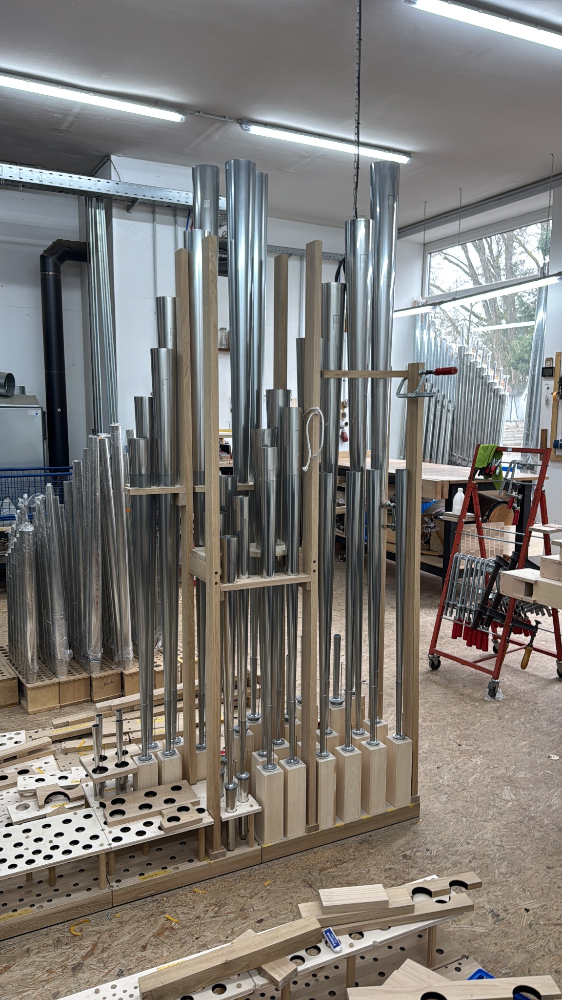
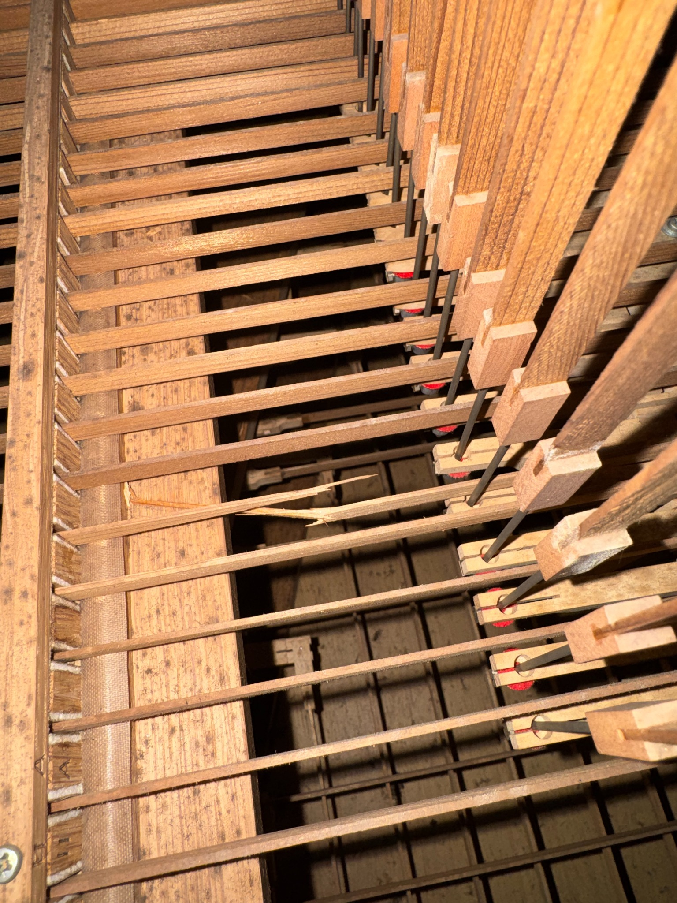

Technik
Mechanik, Windversorgung, Windladen, Spieltisch und Pfeifenwerk müssen zuverlässig und präzise zusammenspielen.
Orgelbau
Die Orgel fasziniert mich nicht nur als Musiker, sondern auch als technisch und handwerklich außergewöhnlich komplexes Instrument. In ihr verbinden sich Klang, Architektur, Mechanik, Material und Raum zu einem individuellen Gesamtkunstwerk.
Seit Oktober 2025 absolviere ich eine verkürzte Ausbildung zum Orgelbauer bei der BÄUMLER Orgelbauwerkstätte in Weiden in der Oberpfalz. Dadurch lerne ich die Orgel aus einer Perspektive kennen, die weit über das Spielen am Instrument hinausgeht.

Ausbildung
Während meiner Ausbildung beschäftige ich mich mit den unterschiedlichen handwerklichen und technischen Bereichen des Orgelbaus. Dabei geht es um den Aufbau, die Funktion und das Zusammenspiel der zahlreichen Bauteile, aus denen eine Orgel besteht.
Mechanik, Windversorgung, Windladen, Spieltisch und Pfeifenwerk müssen zuverlässig und präzise zusammenspielen.
Holz, Metall, Leder und weitere Werkstoffe erfüllen unterschiedliche Aufgaben und verlangen jeweils eine sorgfältige Verarbeitung.
Bei Restaurierungen und Reparaturen treffen historischer Bestand, technische Funktion und behutsame handwerkliche Eingriffe aufeinander.

Restaurierung und Pflege
Zum Orgelbau gehören nicht nur Neubauten. Auch die Reinigung, Wartung, Reparatur und Restaurierung vorhandener Instrumente sind wichtige Aufgaben. Dabei müssen zahlreiche Bauteile sorgfältig ausgebaut, geprüft, bearbeitet und anschließend wieder an ihren richtigen Platz gebracht werden.
Gerade bei älteren Orgeln ist ein genauer Blick auf Material, Konstruktion und vorhandene Schäden entscheidend. Ziel ist es, technische Zuverlässigkeit und den gewachsenen Charakter des Instruments miteinander zu verbinden.
Mechanik
Zwischen Taste und Ventil liegt bei einer mechanischen Orgel ein fein abgestimmtes System aus Abstrakten, Winkeln, Wellen, Ventilen und weiteren Bauteilen. Schon kleine Ungenauigkeiten können sich unmittelbar auf Spielart und Funktion auswirken.

Werkstatt
Viele Arbeitsschritte bleiben später im fertigen Instrument unsichtbar. Gerade dort zeigt sich jedoch, wie eng Konstruktion, Material und präzise Ausführung miteinander verbunden sind.

Windversorgung

Klangwege

Pfeifenwerk
Aufstellung
Beim Rastrieren werden Pfeifenpositionen geplant und passende Halterungen vorbereitet. Die Anordnung muss technisch funktionieren, zugänglich bleiben und den vorhandenen Raum sinnvoll nutzen.
Die beiden Aufnahmen zeigen unterschiedliche Stadien beim Aufbau und bei der Aufstellung des Pfeifenwerks in der Werkstatt.


Reparatur
Defekte Bauteile können die Funktion einer Orgel unmittelbar beeinträchtigen. Eine gebrochene Abstrakte ist ein anschauliches Beispiel dafür, wie wichtig genaue Fehlersuche und eine passende handwerkliche Reparatur sind.
Solche Details machen sichtbar, dass Orgelbau sowohl große konstruktive Zusammenhänge als auch präzise Arbeit an kleinsten Bauteilen umfasst.

Zwei Blickwinkel
Durch meinen musikalischen Hintergrund erlebe ich viele Fragen des Orgelbaus gleichzeitig aus der Perspektive des Spielers. Spielart, Ansprache, Klangbalance und die Wirkung des Instruments im Raum sind für mich nicht nur technische Eigenschaften, sondern unmittelbar musikalisch erfahrbar.
Umgekehrt hilft mir die Ausbildung im Orgelbau dabei, technische Zusammenhänge besser zu verstehen. Ich lerne zunehmend, welche konstruktiven und handwerklichen Entscheidungen hinter dem stehen, was später am Spieltisch wahrgenommen wird.
Gerade diese Verbindung aus musikalischer und handwerklicher Perspektive macht den Orgelbau für mich besonders reizvoll.
Kontakt
Für Fragen rund um Orgeln, Kirchenmusik oder einen persönlichen Austausch erreichst du mich über die Kontaktseite.
Kontakt aufnehmen